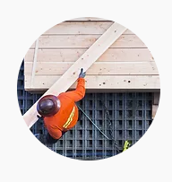

Fortniture Store

Fortniture Store
We are interested in personalizing each project to highlight its uniqueness, making it unique and special like our clients.From the initial concept to the finished product. In this world that does not stop spinning, ENTRELAZARTE has laid the foundation for innovation and manufacturing.
EntrelazArte is a creative group that specializes in customizing spaces. We design and manufacture furniture for all types of domestic and commercial environments. We also provide architectural services from design to project management.
| SEBASTIAN GUTIERREZ Design & Manufacturing Ingenious, creative, skillful and with great capacity to create new technologies and provide new solutions to their proposals. Experience in creating wooden furniture, furniture design and mechanical engineering. | ANA VILLALVA Architecture & Design Creative and creator since childhood, architect, lover of art and decoration. Experience in architectural design, construction, landscaping, urban planning and interior architecture. | ||
|  | FERNANDO MONTERO Master Mayor Optimistic and enthusiastic at heart. Our master builder and advisor. |